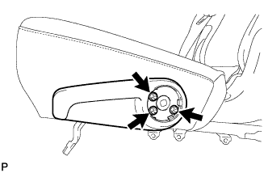
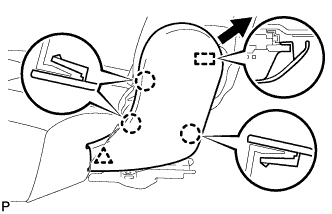
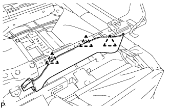
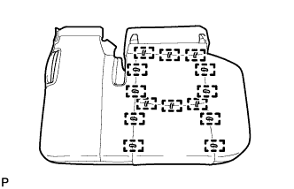
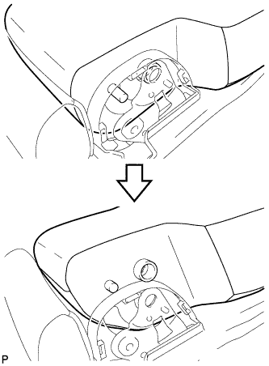
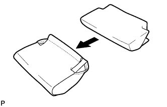
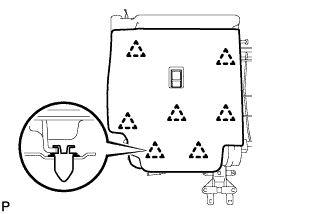
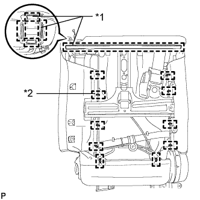
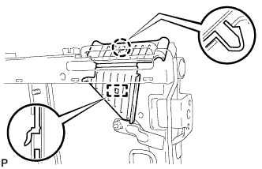

ЗАДНЕЕ СИДЕНЬЕ № 1 В СБОРЕ (для моделей с раздельным сиденьем типа 60/40 с функцией облегчения посадки "Walk In" с левой стороны) > РАЗБОРКА |
| 1. СНИМИТЕ ВЕРХНЮЮ ОТКИДНУЮ КРЫШКУ ЛЕВОГО ЗАДНЕГО СИДЕНЬЯ |
 |
С помощью отвертки освободите 3 захвата и снимите наладку.
| *1 | Защитная клейкая лента |
| 2. СНИМИТЕ РУЧКУ ОТПУСКАНИЯ РЕГУЛЯТОРА НАКЛОНА ЛЕВОГО СИДЕНЬЯ |
|  |
Выверните 3 болта и снимите рукоятку.
| 3. СНИМИТЕ ЛЕВУЮ КРЫШКУ ПЕТЛИ ЦЕНТРАЛЬНОГО СИДЕНЬЯ |
 |
С помощью съемника фиксаторов освободите фиксатор.
Освободите 2 направляющих и снимите крышку.
| 4. СНИМИТЕ МОЛДИНГ ПОДУШКИ ЛЕВОГО ЗАДНЕГО СИДЕНЬЯ |
|  |
С помощью съемника фиксаторов расцепите фиксатор.
С помощью съемника молдингов расцепите 3 захвата.
Переместите молдинг в направлении, указанном на рисунке стрелкой, чтобы отсоединить направляющую, и снимите молдинг.
| 5. СНИМИТЕ КРЫШКУ ЗАЩЕЛКИ ЗАМКА СПИНКИ ЛЕВОГО ЗАДНЕГО СИДЕНЬЯ |
|  |
С помощью съемника фиксаторов освободите 3 фиксаторов и снимите щиток.
| 6. СНИМИТЕ ОБИВКУ ПОДУШКИ СИДЕНЬЯ ВМЕСТЕ С ПОДУШКОЙ |
 |
Отсоедините крепления.
 |
Освободите крепление и снимите обивку подушки сиденья вместе с подушкой.
| 7. СНИМИТЕ ЭЛЕМЕНТ ЗАЩИТЫ ЗАДНЕГО СИДЕНЬЯ № 2 |
Снимите 2 защитных элемента с подушки.
| 8. СНИМИТЕ ОБИВКУ ПОДУШКИ РАЗДЕЛЬНОГО ЗАДНЕГО СИДЕНЬЯ |
|  |
Снимите витковые пружины и обивку подушки сиденья с подушки сиденья.
| 9. СНИМИТЕ КРАЕВОЕ УКРЕПЛЕНИЕ ПОДУШКИ ЗАДНЕГО СИДЕНЬЯ |
Снимите защитный элемент с пружины подушки.
| 10. СНИМИТЕ СПИНКУ ЦЕНТРАЛЬНОГО СИДЕНЬЯ В СБОРЕ |
 |
Выверните 2 болта и снимите спинку центрального сиденья.
| 11. СНИМИТЕ ЦЕНТРАЛЬНЫЙ ПОДГОЛОВНИК ЗАДНЕГО СИДЕНЬЯ В СБОРЕ |
Снимите подголовник.
| 12. СНИМИТЕ КРЫШКУ ПЕТЛИ ЦЕНТРАЛЬНОГО СИДЕНЬЯ |
 |
С помощью съемника фиксаторов освободите фиксатор.
Освободите 2 направляющих и снимите крышку.
| 13. СНИМИТЕ ОТКИДНОЙ КРОНШТЕЙН ЛЕВОГО ЗАДНЕГО СИДЕНЬЯ |
 |
С помощью торцевого ключа с головкой "TORX" T45 выверните болт "TORX" и снимите втулку и кронштейн.
| 14. СНИМИТЕ ОТКИДНОЙ КРОНШТЕЙН ПРАВОГО ЗАДНЕГО СИДЕНЬЯ |
С помощью торцевого ключа с головкой "TORX" T45 выверните болт "TORX" и снимите втулку и кронштейн.
| 15. СНИМИТЕ НАКЛАДКУ ОПОРЫ СПИНКИ ЛЕВОГО ЗАДНЕГО СИДЕНЬЯ |
 |
С помощью съемника молдингов расцепите 3 захвата.
Отсоедините направляющую и снимите щиток.
| 16. СНИМИТЕ НАКЛАДКУ ОПОРЫ СПИНКИ ПРАВОГО ЗАДНЕГО СИДЕНЬЯ |
С помощью съемника молдингов расцепите 3 захвата.
Отсоедините направляющую и снимите щиток.
| 17. СНИМИТЕ ЦЕНТРАЛЬНЫЙ ПОДЛОКОТНИК ЗАДНЕГО СИДЕНЬЯ В СБОРЕ |
 |
С помощью торцевого ключа "TORX" T45 выверните 2 болта "TORX" и снимите 2 втулки.
 |
Отверните гайку и снимите опору подлокотника.
|  |
Снимите подлокотник, как показано на рисунке.
| 18. СНИМИТЕ ПОДСТАВКУ ДЛЯ ЧАШКИ ЦЕНТРАЛЬНОГО ПОДЛОКОТНИКА ЗАДНЕГО СИДЕНЬЯ В СБОРЕ |
 |
Выверните 2 винта.
 |
С помощью съемника молдингов освободите 2 захвата и снимите подставку для чашки.
| 19. СНИМИТЕ ОБИВКУ СПИНКИ ЗАДНЕГО СИДЕНЬЯ |
 |
С помощью отвертки освободите 4 захвата и снимите обивку.
| 20. СНИМИТЕ КРЫШКУ ЗАМКА СПИНКИ ЗАДНЕГО СИДЕНЬЯ |
 |
С помощью съемника молдингов расцепите захват.
Переместите крышку в направлении, указанном на рисунке стрелкой, чтобы освободить фиксатор и 2 направляющих, а затем снимите крышку.
| 21. СНИМИТЕ ПАНЕЛЬ СПИНКИ ЗАДНЕГО СИДЕНЬЯ В СБОРЕ |
С помощью съемника фиксаторов отсоедините 5 фиксаторов и снимите панель.
| 22. СНИМИТЕ КРЫШКУ ПОДЛОКОТНИКА СИДЕНЬЯ |
 |
Отсоедините крепления.
Снимите обивку с подушкой.
|  |
Снимите крышку с накладки.
| 23. СНИМИТЕ ДЕРЖАТЕЛЬ ПОДГОЛОВНИКА ЗАДНЕГО СИДЕНЬЯ |
 |
Освободите 4 захвата и снимите 2 держателя.
| 24. СНИМИТЕ ОБИВКУ СПИНКИ СИДЕНЬЯ № 1 |
 |
С помощью съемника молдингов расцепите 2 захвата.
 |
Отсоедините направляющую и снимите щиток.
| 25. СНИМИТЕ ЛЕВЫЙ ЗАМОК ЗАДНЕГО СИДЕНЬЯ В СБОРЕ |
 |
Освободите зажим и отсоедините жгут проводов.
Выверните 2 болта и снимите замок.
| 26. СНИМИТЕ РЫЧАГ ЗАМКА ЗАДНЕГО СИДЕНЬЯ № 1 |
Снимите рычаг, как показано на рисунке.
| 27. СНИМИТЕ АРМИРУЮЩУЮ ПРОВОЛОКУ СПИНКИ СКЛАДЫВАЮЩЕГОСЯ СИДЕНЬЯ |
Освободите 2 захвата и снимите жгут проводов.
| 28. СНИМИТЕ КРЫШКУ КРЮКА ДЛЯ ОДЕЖДЫ |
С помощью отвертки расцепите 2 захвата и направляющую и снимите крышку.
| *1 | Защитная клейкая лента |
| 29. СНИМИТЕ ОБИВКУ СПИНКИ ЦЕНТРАЛЬНОГО СИДЕНЬЯ № 2 |
 |
Выверните 3 винта и снимите крышку.
| 30. СНИМИТЕ ЗАМОК РЕМНЯ БЕЗОПАСНОСТИ ЛЕВОГО ЗАДНЕГО СИДЕНЬЯ № 1 В СБОРЕ |
 |
Выверните болт, снимите замок ремня безопасности и отсоедините центральный ремень безопасности.
| 31. СНИМИТЕ КОЛПАЧОК ЛЕВОЙ РУЧКИ РЕГУЛЯТОРА НАКЛОНА |
 |
С помощью отвертки расцепите захват и направляющую и снимите крышку.
| *1 | Защитная клейкая лента |
| 32. СНИМИТЕ РЫЧАГ ЗАМКА ЛЕВОГО ЗАДНЕГО СИДЕНЬЯ В СБОРЕ |
 |
Выверните 2 винта.
 |
Отсоедините трос в порядке, показанном на рисунке, и снимите рычаг.
| 33. СНИМИТЕ КРЫШКУ КРЕПЛЕНИЯ РЕМНЯ БЕЗОПАСНОСТИ |
 |
С помощью отвертки освободите 2 захвата и снимите колпачок.
| *1 | Защитная клейкая лента |
| 34. СНИМИТЕ КРЫШКУ ПЛЕЧЕВОГО КРЕПЛЕНИЯ РЕМНЯ ЗАДНЕГО СИДЕНЬЯ |
Отсоедините ремень безопасности от крышки.
 |
Освободите 2 захвата и 2 направляющие, а затем снимите щиток.
| 35. СНИМИТЕ ОБИВКУ СПИНКИ ЗАДНЕГО СИДЕНЬЯ |
|
С помощью отвертки освободите 4 захвата и снимите обивку.
| 36. СНИМИТЕ ПАНЕЛЬ ПОКРЫТИЯ СПИНКИ ЛЕВОГО ЗАДНЕГО СИДЕНЬЯ В СБОРЕ |
|  |
С помощью съемника фиксаторов расцепите 7 фиксаторов и снимите панель покрытия.
| 37. СНИМИТЕ ДЕРЖАТЕЛЬ ПОДГОЛОВНИКА ЗАДНЕГО СИДЕНЬЯ № 1 В СБОРЕ |
 |
Освободите 4 захвата и снимите 2 держателя.
| 38. СНИМИТЕ ОБИВКУ СПИНКИ СИДЕНЬЯ ВМЕСТЕ С ПОДУШКОЙ |
|  |
Снимите витковые пружины и освободите крепления, а затем снимите обивку спинки сиденья с подушкой.
| *1 | Крюк |
| *2 | Витковая пружина |
 |
Отсоедините ремень безопасности от обивки спинки сиденья с подушкой.
| 39. СНИМИТЕ ОБИВКУ СПИНКИ РАЗДЕЛЬНОГО ЗАДНЕГО СИДЕНЬЯ |
Снимите витковые пружины и обивку с подушки спинки сиденья.
| 40. СНИМИТЕ КРАЕВОЕ УКРЕПЛЕНИЕ СПИНКИ ЗАДНЕГО СИДЕНЬЯ |
Отсоедините защитный элемент от рамы спинки сиденья.
| 41. СНИМИТЕ ВНУТРЕННЮЮ ОТКИДНУЮ КРЫШКУ ЛЕВОГО ЗАДНЕГО СИДЕНЬЯ |
 |
Выверните 2 винта.
Отсоедините направляющую и снимите щиток.
| 42. СНИМИТЕ ЛЕВУЮ ВНУТРЕННЮЮ КРЫШКУ РЕГУЛЯТОРА НАКЛОНА |
 |
Выверните 2 винта.
Отцепите 2 захвата и снимите обивку.
| 43. СНИМИТЕ ЗАДНИЙ МОЛДИНГ ПОДУШКИ ЛЕВОГО ЗАДНЕГО СИДЕНЬЯ |
С помощью съемника фиксаторов расцепите фиксатор.
С помощью съемника молдингов расцепите 4 захвата.
Переместите молдинг в направлении, указанном на рисунке стрелкой, чтобы отсоединить направляющую, и снимите молдинг.
| 44. СНИМИТЕ КОЛПАЧОК |
Освободите 2 захвата и снимите крышку.
| 45. СНИМИТЕ ВНУТРЕННЮЮ ОТКИДНУЮ КРЫШКУ ЛЕВОГО ЗАДНЕГО СИДЕНЬЯ |
Освободите захват и направляющую, а затем снимите накладку.
| 46. СНИМИТЕ ПРУЖИННЫЙ АМОРТИЗАТОР ПОДУШКИ ЗАДНЕГО СИДЕНЬЯ |
Отверните 2 гайки и снимите амортизатор.
| 47. СНИМИТЕ НАПРАВЛЯЮЩУЮ ПЛЕЧЕВОГО КРЕПЛЕНИЯ РЕМНЯ ЗАДНЕГО СИДЕНЬЯ |
|  |
Освободите захват и направляющую, а затем снимите направляющую ремня.
| 48. СНИМИТЕ ЛЕВЫЙ 3-ТОЧЕЧНЫЙ РЕМЕНЬ БЕЗОПАСНОСТИ СИДЕНЬЯ № 1 В СБОРЕ |
 |
Отверните гайку, выверните болт, освободите 2 захвата и снимите ремень безопасности.
| 49. СНИМИТЕ ТРОС УПРАВЛЕНИЯ НАКЛОНОМ ЗАДНЕГО СИДЕНЬЯ |
Обрежьте 4 бандажа жгута проводов.
Освободите 3 зажима троса и отсоедините трос, а затем снимите его.
| 50. СНИМИТЕ ТРОС УПРАВЛЕНИЯ НАКЛОНОМ ЗАДНЕГО СИДЕНЬЯ № 2 |
Освободите 3 зажима троса и отсоедините трос, а затем снимите его.
| 51. СНИМИТЕ ЛЕВЫЙ РЫЧАГ ФИКСАЦИИ СПИНКИ ЗАДНЕГО СИДЕНЬЯ В СБОРЕ |
Отверните 2 гайки и снимите рычаг.
| 52. СНИМИТЕ РАМУ СПИНКИ ЛЕВОГО ЗАДНЕГО СИДЕНЬЯ В СБОРЕ |
Выверните 2 болта "TORX" с помощью торцевого ключа с головкой "TORX" T45.
Выверните 2 болта и снимите раму спинки сиденья.
| 53. СНИМИТЕ КАРКАС ПОДУШКИ ЛЕВОГО ЗАДНЕГО СИДЕНЬЯ В СБОРЕ |
 |
Отверните 6 гаек и снимите раму подушки сиденья.
| 54. СНИМИТЕ РУЧКУ РЕГУЛИРОВКИ НАПРАВЛЯЮЩИХ ЛЕВОГО ЗАДНЕГО СИДЕНЬЯ |
Сдвиньте направляющую в крайнее заднее положение.
С помощью небольшой отвертки прижмите стопор ручки, чтобы отсоединить захват, и снимите ручку регулировки.